الحسابات والمشاريع الرقمية
إدارة العلاقة والاجتماعات وخطط المحتوى ومتطلبات التنفيذ وتوزيع المهام والاعتمادات والنشر والتقارير ومؤشرات الأداء، ومتابعة نطاق العمل والميزانيات والتصعيد وعروض الأسعار وتجديد العقود.
أُدير التقنية والمواقع،
وحسابات العملاء والمشاريع الرقمية
من البداية إلى التسليم.
أجمع بين إدارة بيئة العمل التقنية وقيادة تنفيذ أعمال العملاء. أُدير 90 موقعًا ومحتواها واستضافتها ونطاقاتها، وحسابات البريد والصلاحيات لـ100 مستخدم على Google Workspace وMicrosoft 365، وأقدّم الدعم التقني لـ100 موظف وأجهزتهم.
وفي إدارة الحسابات، أتولى فهم احتياج العميل وتخطيط الأعمال وتوزيع المهام وتوجيه فرق المحتوى والتصميم والموشن والبرمجة، ثم مراجعة المخرجات واعتمادها وتسليمها ومتابعة النشر والتقارير ونطاق العمل. وأطوّر المواقع والمنصات الداخلية التي تدعم التشغيل وتنظّم العمل.
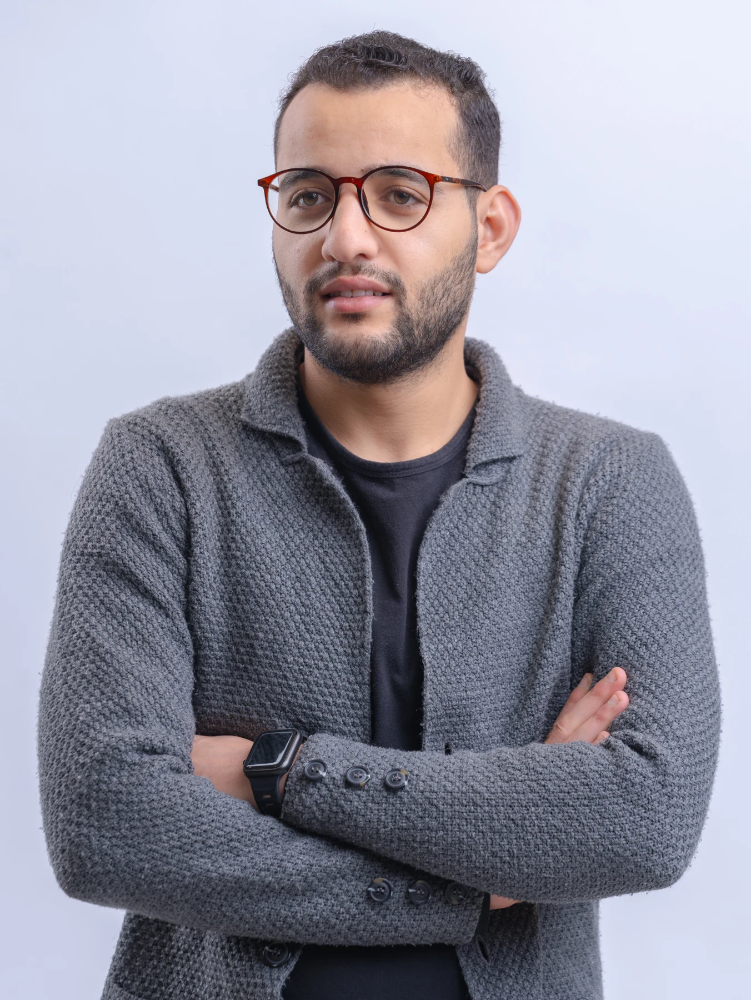
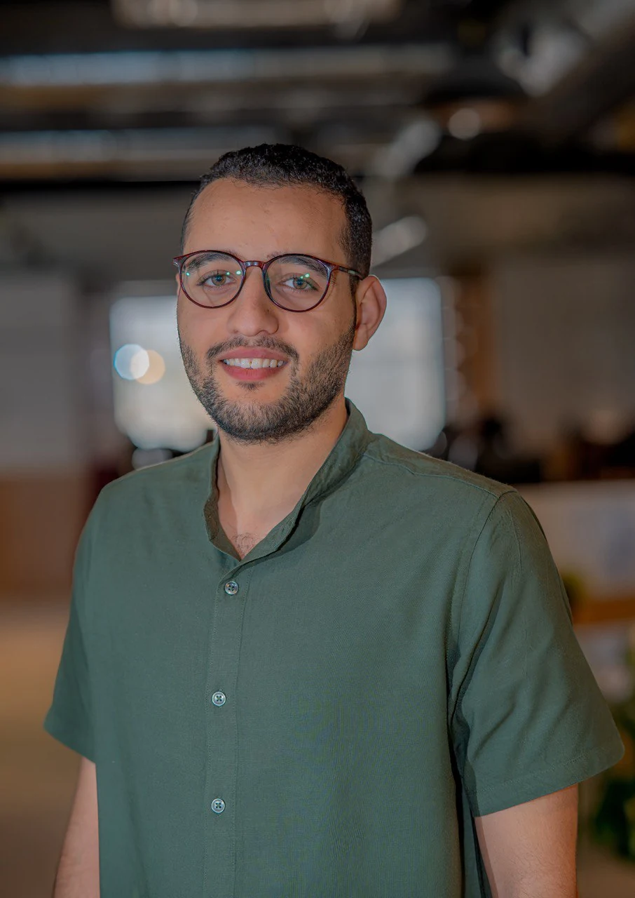
أنا إبراهيم الفضالي، خريج علوم الحاسب عام 2019، وأعمل منذ 2021 في ريادة الأفكار ثم وايدا. تجمع خبرتي إدارة تقنية المعلومات والمواقع مع إدارة حسابات العملاء والمشاريع الرقمية من فهم المتطلبات إلى التسليم والمتابعة. ساهمت خلال مسيرتي في أعمال لنحو 50 عميلًا عبر جهات العمل، وأتابع حاليًا 6 حسابات عملاء.
في الجانب التقني، أُدير المواقع والمحتوى العربي والإنجليزي والاستضافة والنطاقات وإعدادات DNS، وحسابات Google Workspace وMicrosoft 365 وصلاحيات المستخدمين، وأعالج مشكلات الأجهزة والبرامج. كما أصمّم وأطوّر المواقع والمنصات الداخلية؛ ومن أعمالي منصتا وايدا وبرو ورك لتنظيم الخدمات والطلبات ومسارات العمل.
وفي حسابات العملاء، أُدير التواصل والاجتماعات وخطط العمل والمحتوى، وأجهّز متطلبات التنفيذ وأوزّع المهام وأتابع الأولويات والمواعيد. أوجّه الفرق المتخصصة وأراجع مخرجاتها، وأتابع ملاحظات العميل واعتماده والتسليم والجدولة والنشر والتقارير، مع متابعة نطاق العمل والميزانيات والطلبات الإضافية وتطوير الحساب.
إدارة العلاقة والاجتماعات وخطط المحتوى ومتطلبات التنفيذ وتوزيع المهام والاعتمادات والنشر والتقارير ومؤشرات الأداء، ومتابعة نطاق العمل والميزانيات والتصعيد وعروض الأسعار وتجديد العقود.
شرح المطلوب وتوزيع المهام على كتّاب المحتوى والمصممين وفريق الموشن، وتوجيه التنفيذ ومراجعة المخرجات ومتابعة اعتماد العميل.
إنشاء مواقع العملاء ونشرها وتحديثها، وتطوير أنظمة داخلية لمسارات العمل والصلاحيات.
إدارة النطاقات والاستضافة والبريد والمستخدمين، ومعالجة مشكلات الأجهزة وحسابات العمل.
أنظمة داخلية، مواقع عملاء، ومشاريع أندرويد؛ مع توضيح دوري في كل عمل.
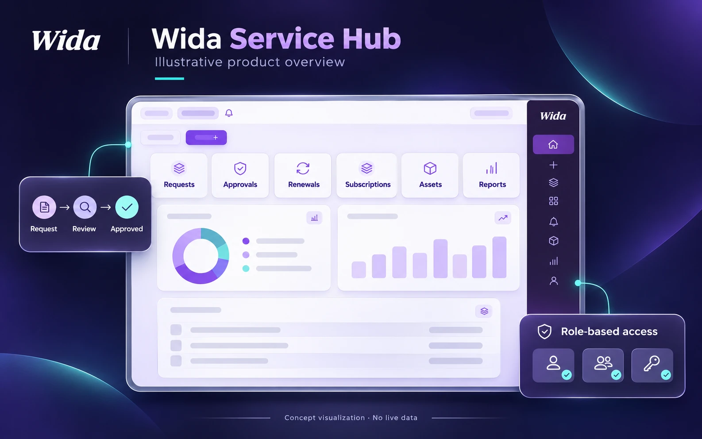
تصميم وتطوير وإطلاق منصة تخدم 100 موظف، لإدارة طلبات الأقسام والموافقات والمستخدمين والعملاء والاشتراكات والنطاقات والعهد الرقمية وأوامر الصرف، مع التقارير والإشعارات ولوحة متابعة للإدارة.
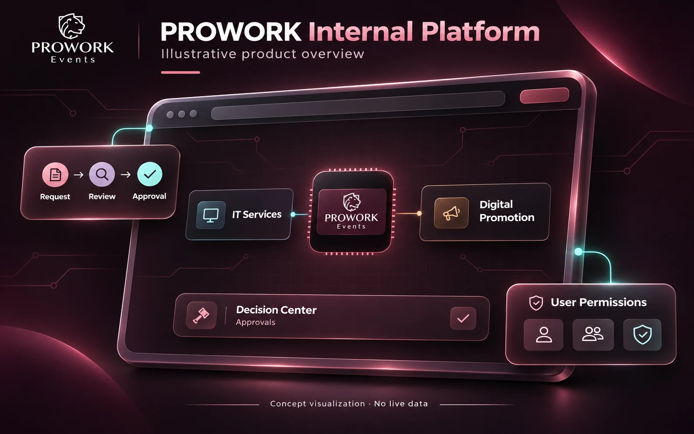
صممت وطوّرت وأطلقت منصة داخلية مشابهة لمنصة وايدا لتنظيم خدمات الشركة ومتابعة العمل. بدأ الموظفون استخدامها، وتشمل مسؤوليتي التطوير والتشغيل.
غلاف توضيحي للمشروع؛ لا يتضمن بيانات فعلية من النظام.
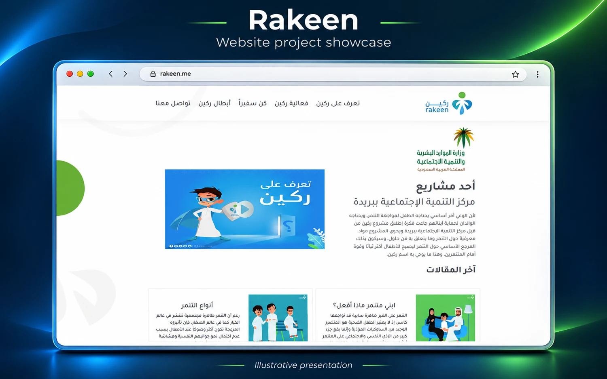
تصميم وتطوير الموقع، ورفعه على الاستضافة وتشغيله وتحديثه.
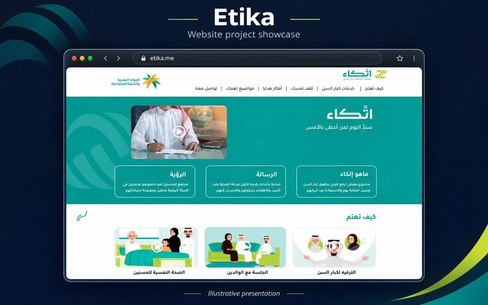
تصميم وتطوير الموقع، ورفعه على الاستضافة وتشغيله وتحديثه.
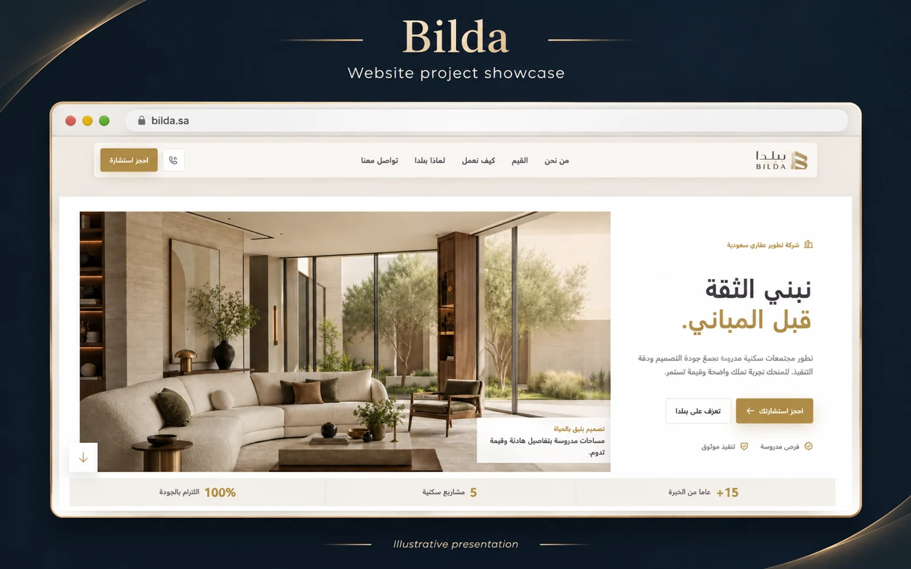
تصميم وتطوير الموقع، ورفعه على الاستضافة وتشغيله وتحديثه.
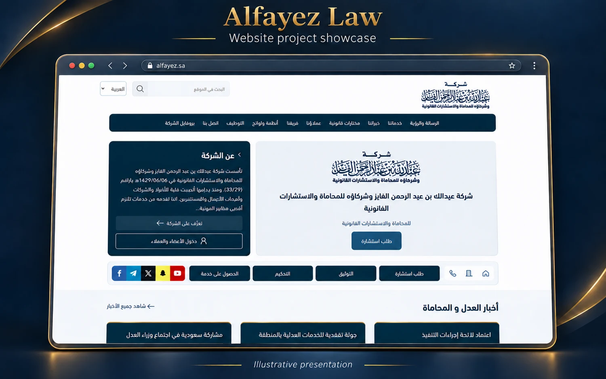
تصميم وتطوير الموقع، ورفعه على الاستضافة وتشغيله وتحديثه.
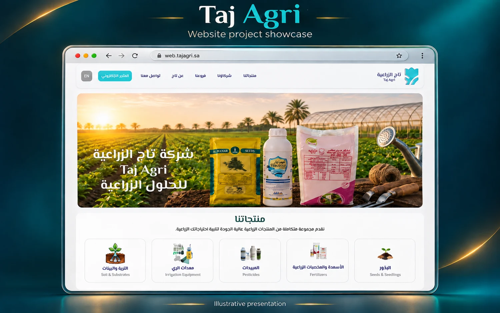
تصميم وتطوير الموقع، ورفعه على الاستضافة وتشغيله وتحديثه.
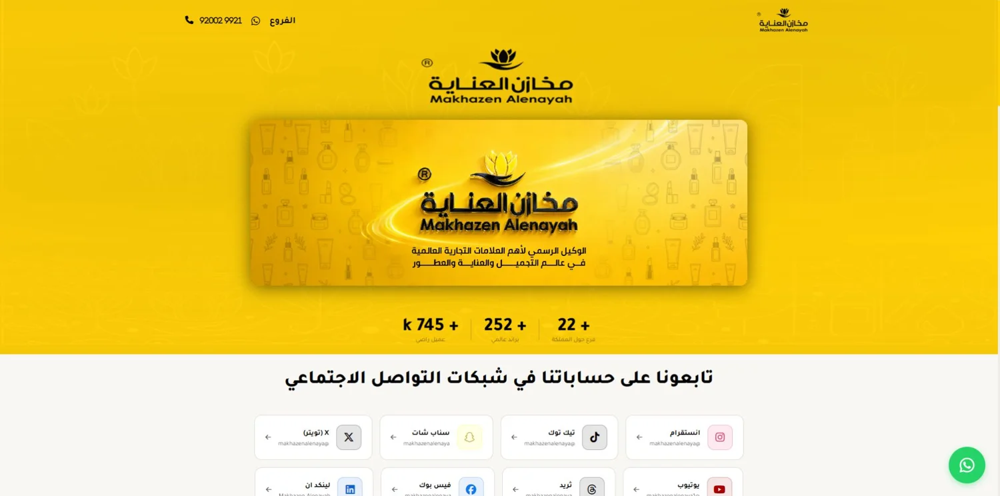
إنشاء الموقع، مع متابعة المحتوى وإدارة الحسابات حتى النشر على المنصات.
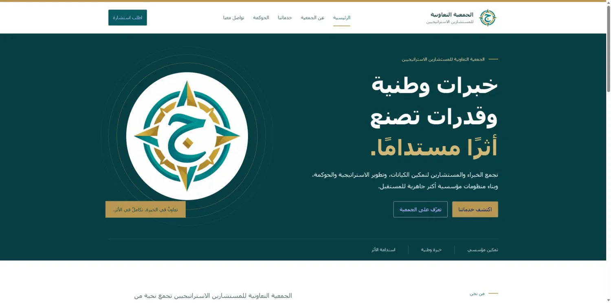
إنشاء الموقع والدومين، وإعداد Google Workspace وحسابات التواصل الاجتماعي.
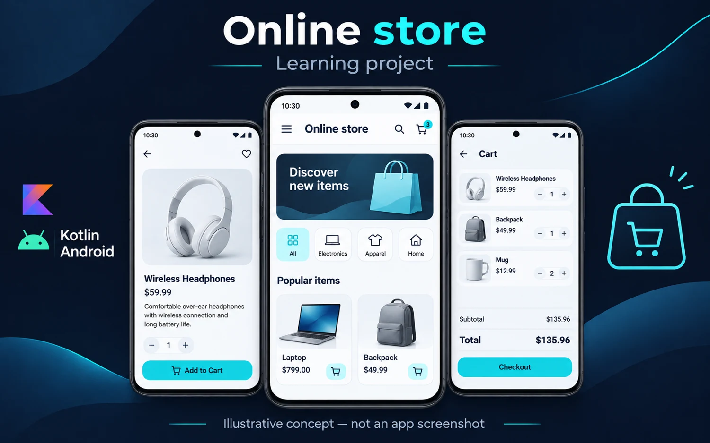
تصور توضيحي للمشروع · ليس لقطة من التطبيق
Android / مشروع دراسي أو تدريبيتطبيق متجر إلكتروني ضمن مشاريع تطوير أندرويد.
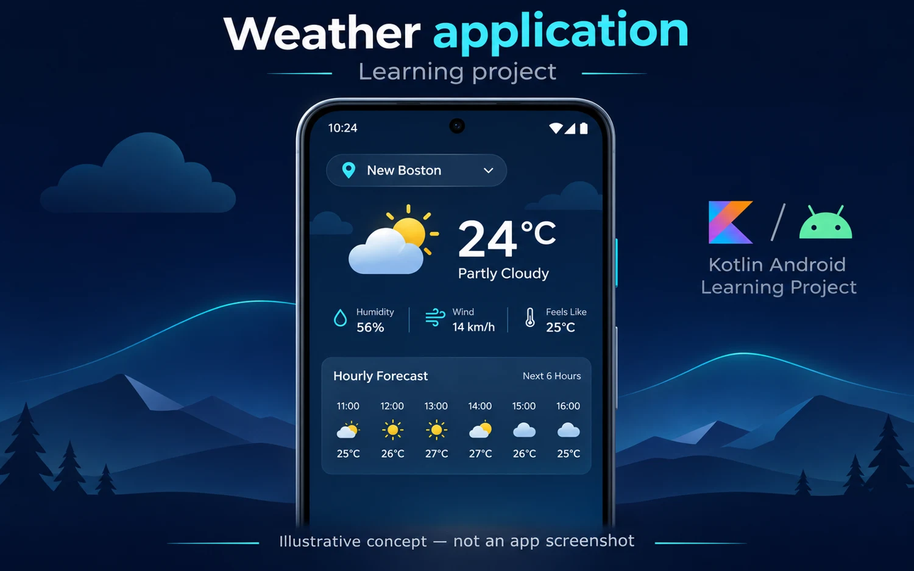
تصور توضيحي للمشروع · ليس لقطة من التطبيق
Android / مشروع دراسي أو تدريبيمشروع لعرض بيانات الطقس والتكامل مع واجهات API.
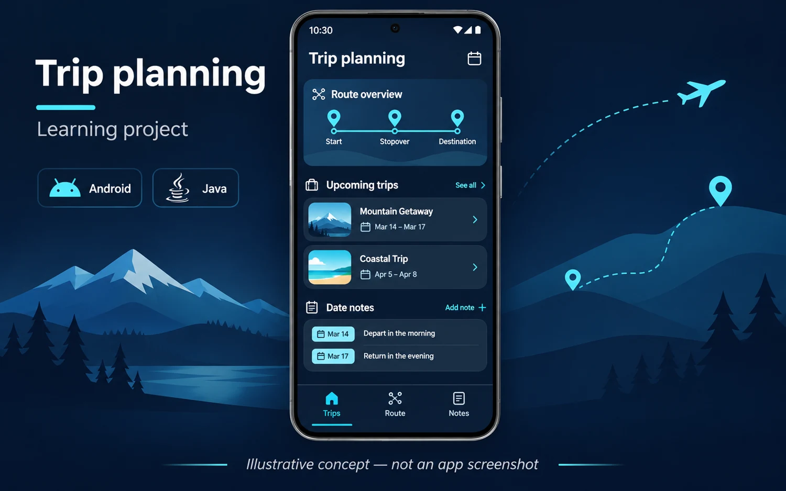
تصور توضيحي للمشروع · ليس لقطة من التطبيق
Android / مشروع دراسي أو تدريبيمشروع لتخطيط الرحلات باستخدام Java وخرائط Google.
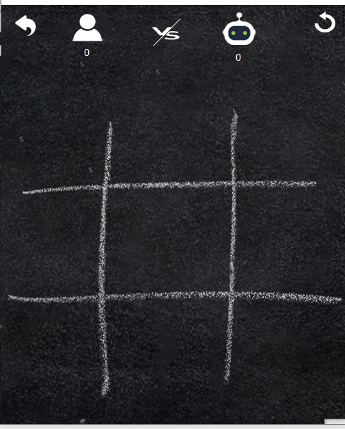
صورة فعلية من مستودع المشروع
جافا للكمبيوتر / مشروع تدريبيلعبة XO للكمبيوتر باستخدام Java Swing، ضمن المشاريع التدريبية، وتدعم اللعب الفردي والمحلي وعبر الشبكة وتسجيل المباريات.
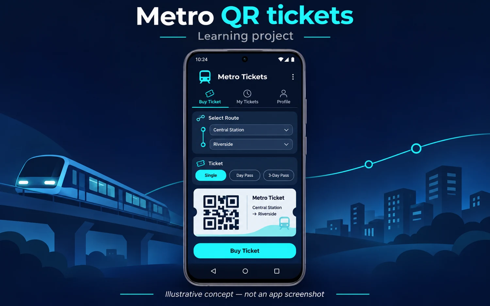
تصور توضيحي للمشروع · ليس لقطة من التطبيق
Android / مشروع دراسي أو تدريبيمشروع التخرج لتذاكر المترو باستخدام رمز QR، وتطوير تطبيق أندرويد بلغة Java.
مشاريع أندرويد توضح الجانب الدراسي والتدريبي من خبرتي. الروابط تفتح مستودعات الكود العامة.
يوضح كل مثال مساهمتي في الإدارة والتنسيق والتنفيذ، ضمن عملي لدى وايدا أو ريادة الأفكار.
إنشاء الموقع والدومين، وإعداد Google Workspace، وإنشاء حسابات التواصل الاجتماعي للعميل.
استعرض الأعمالمتابعة أعمال الحسابات والمحتوى، وتنسيق المراجعة والاعتماد والترجمة والنشر على حسابات اللغات المختلفة. تولّيت إدارة الحساب من التواصل والتخطيط حتى التقارير والميزانيات وتطوير العلاقة مع العميل.
استعرض الأعمال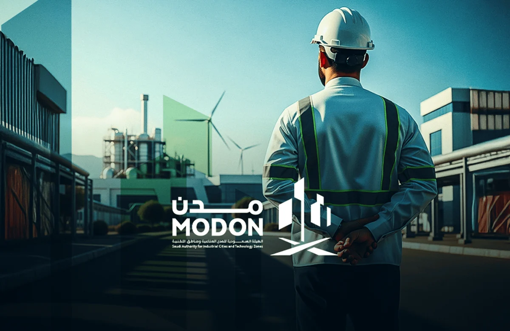
أعمال تجمع إدارة الحسابات مع إعداد الخدمات الرقمية وتنسيق الترجمة والنشر بأربع لغات.
استعرض الأعمال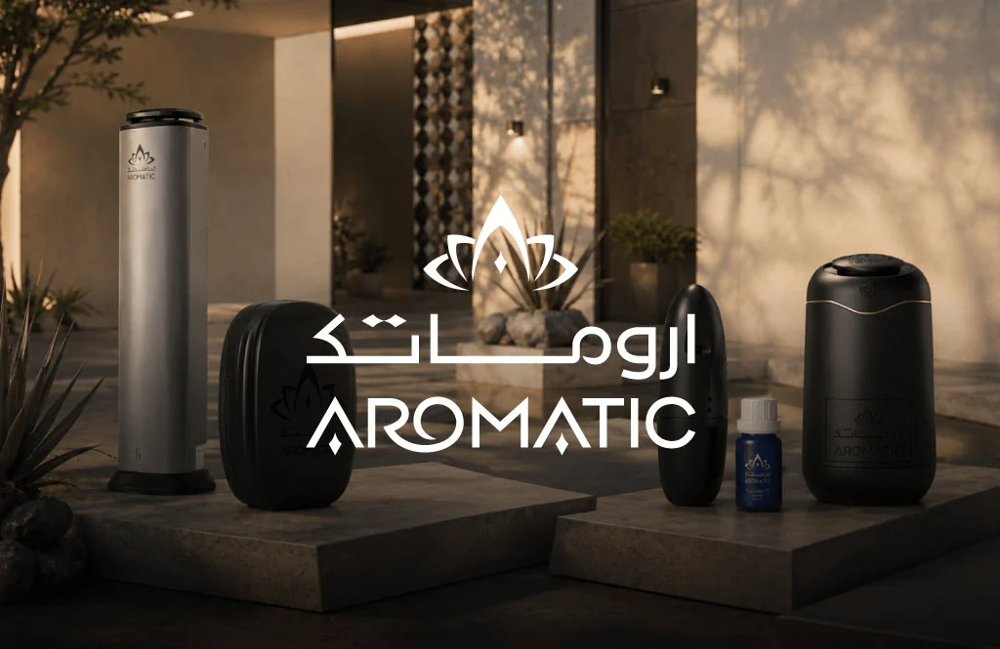
إدارة المنتجات والأسعار في متجر زد، وتنسيق التصاميم والفيديوهات والاعتمادات والنشر على حسابات العميل. تولّيت إدارة الحساب من التواصل والتخطيط حتى التقارير والميزانيات وتطوير العلاقة مع العميل.
استعرض الأعمالإدارة المنتجات والأسعار في متجر زد، وتنسيق التصاميم والفيديوهات والاعتمادات والنشر على حسابات العميل.
استعرض الأعمال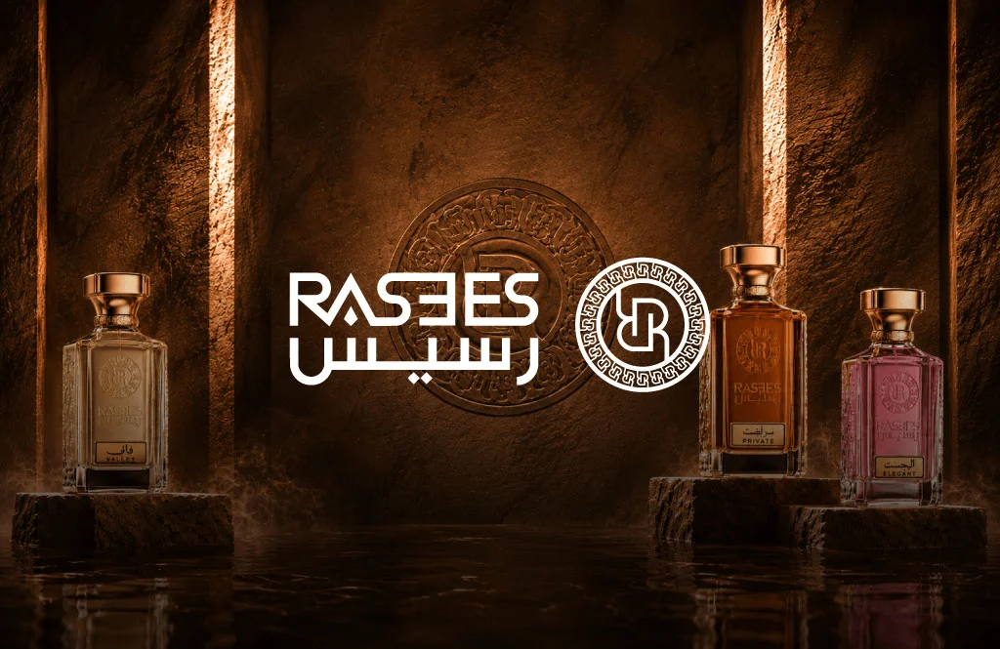
إدارة المنتجات والأسعار في متجر زد، وتنسيق التصاميم والفيديوهات والاعتمادات والنشر على حسابات العميل. تولّيت إدارة الحساب من التواصل والتخطيط حتى التقارير والميزانيات وتطوير العلاقة مع العميل.
استعرض الأعمالإنشاء الموقع الإلكتروني للعميل ومتابعة أعمال المحتوى من الإعداد والتنسيق حتى النشر على المنصات. تولّيت إدارة الحساب من التواصل والتخطيط حتى التقارير والميزانيات وتطوير العلاقة مع العميل.
استعرض الأعمال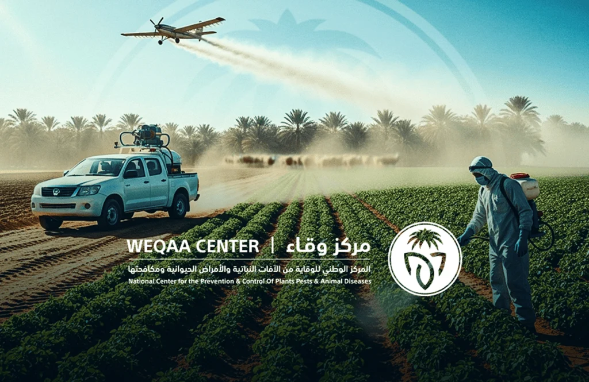
إدارة حساب العميل ومتابعة متطلبات الأعمال والتنسيق مع الفريق بشأن تنفيذها.
استعرض الأعمال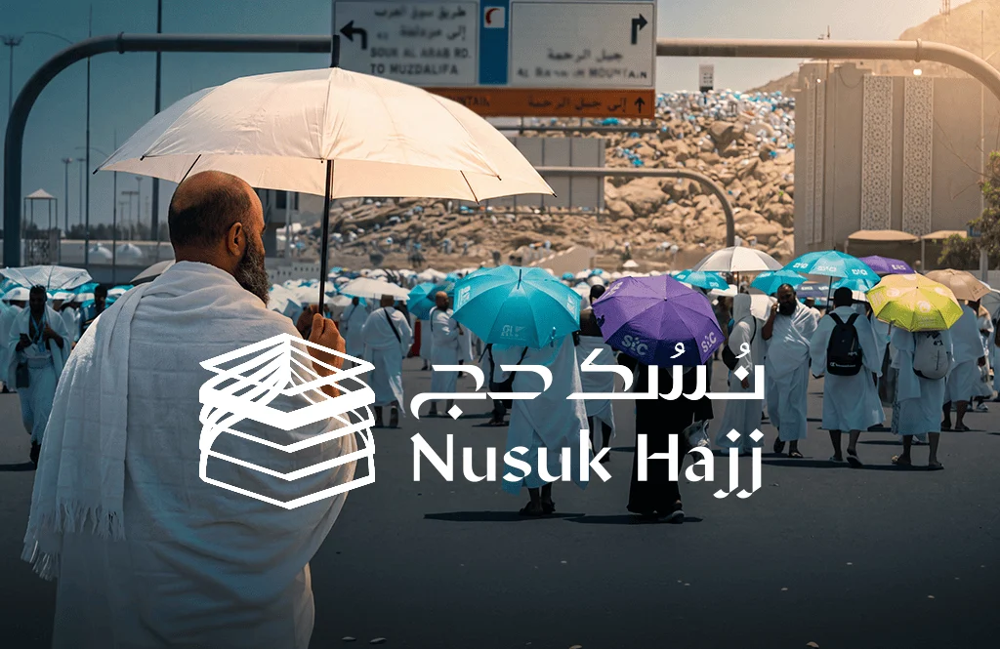
إدارة حساب العميل ومتابعة متطلبات الأعمال والتنسيق مع الفريق بشأن تنفيذها. تولّيت إدارة الحساب من التواصل والتخطيط حتى التقارير والميزانيات وتطوير العلاقة مع العميل.
استعرض الأعمال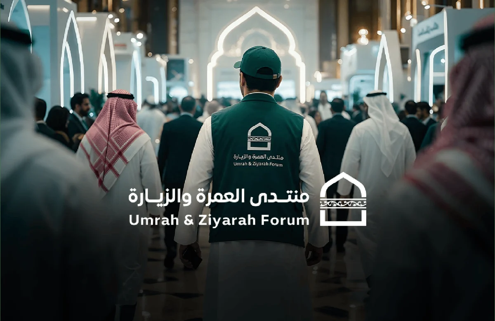
إدارة حساب العميل ومتابعة متطلبات الأعمال والتنسيق مع الفريق بشأن تنفيذها.
استعرض الأعمال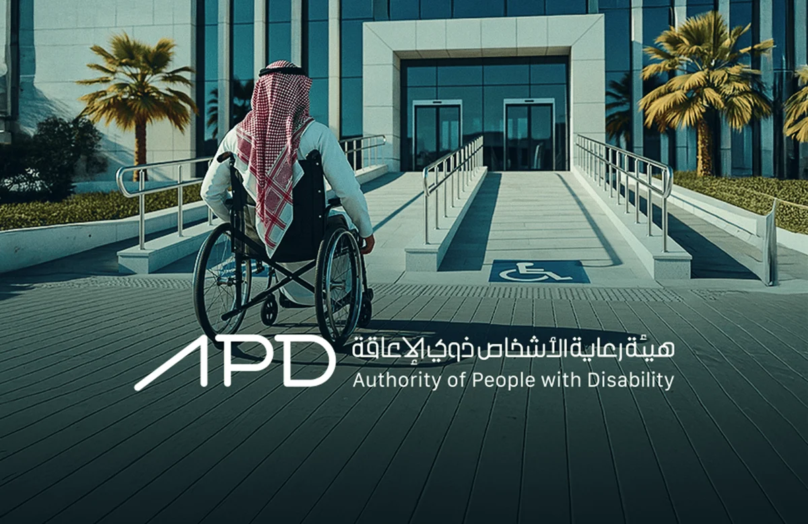
إدارة حساب العميل ومتابعة متطلبات الأعمال والتنسيق مع الفريق بشأن تنفيذها.
استعرض الأعمالأُدير 90 موقعًا ومحتواها وخدمات استضافتها ونطاقاتها. هذه أمثلة من نطاق عملي، وتوضح مسؤولية الإدارة والتشغيل وإضافة المحتوى.
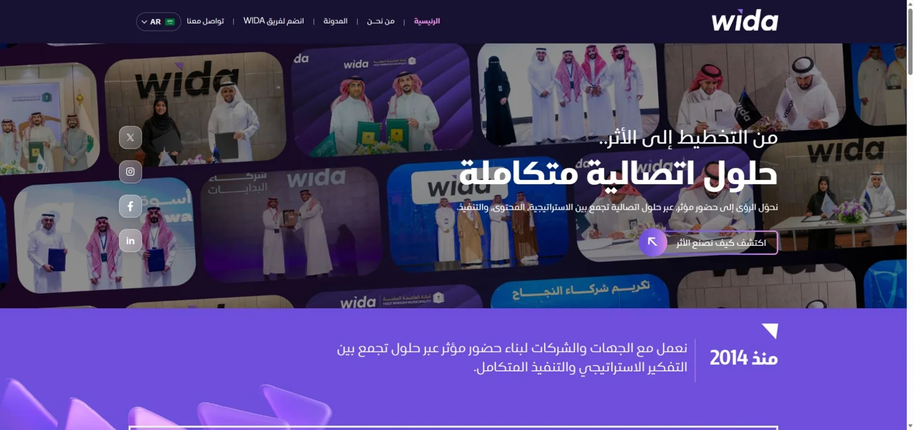
أتولى الإدارة الكاملة للموقع وإضافة وتحديث المحتوى العربي والإنجليزي، مع قيادة فريق البرمجة وشرح التعديلات ومتابعة تنفيذها ومراجعتها. هذا الدور مستقل عن تطوير منصة وايدا الداخلية.
زيارة الموقع ↗المسؤولية في هذه القائمة هي إدارة المواقع ومحتواها واستضافتها؛ يُوضح التطوير والإنشاء بصورة مستقلة في المشاريع أعلاه.
أدوات أستخدمها في التطوير والتشغيل وتنسيق العمل الرقمي.
تطوير المواقع وإدارة بيئة العمل التقنية.
جدولة النشر وتنسيق الفريق ومتابعة المتاجر.
تقنيات استخدمتها في مشاريعي الدراسية والتدريبية.
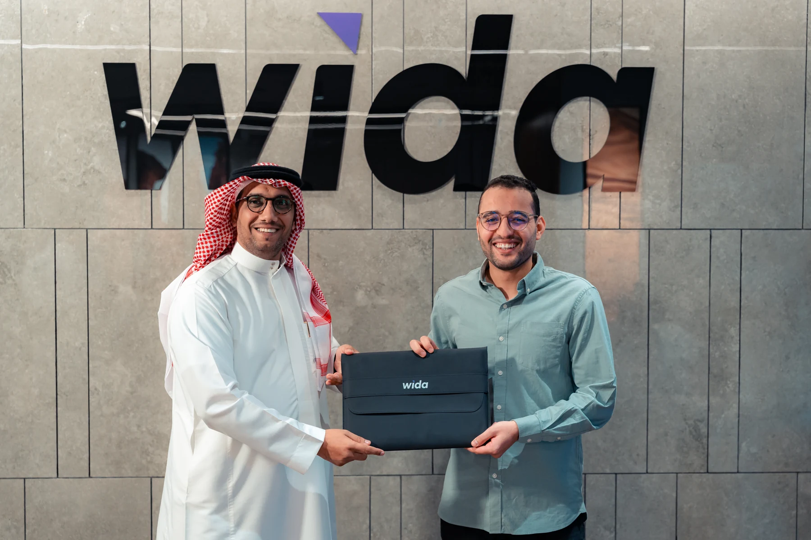
تقديرًا للجهود المبذولة والمساهمات في مختلف أعمال الشركة.
جامعة مصر للعلوم والتكنولوجيا
مشروع التخرج: تطبيق تذاكر المترو باستخدام QR بلغة Java.
معهد تكنولوجيا المعلومات ITI
Java · Kotlin · Firebase · REST APIs · Git
نسختان حسب التخصص، كل منهما متاحة بالعربية والإنجليزية بصيغة PDF.
لأدوار إدارة العملاء وتنسيق المشاريع والمحتوى والعمليات الرقمية.
لأدوار تطوير وإدارة المواقع والاستضافة والدعم والتشغيل التقني.
للفرص المهنية في المشاريع الرقمية وتطوير المواقع والتشغيل التقني.